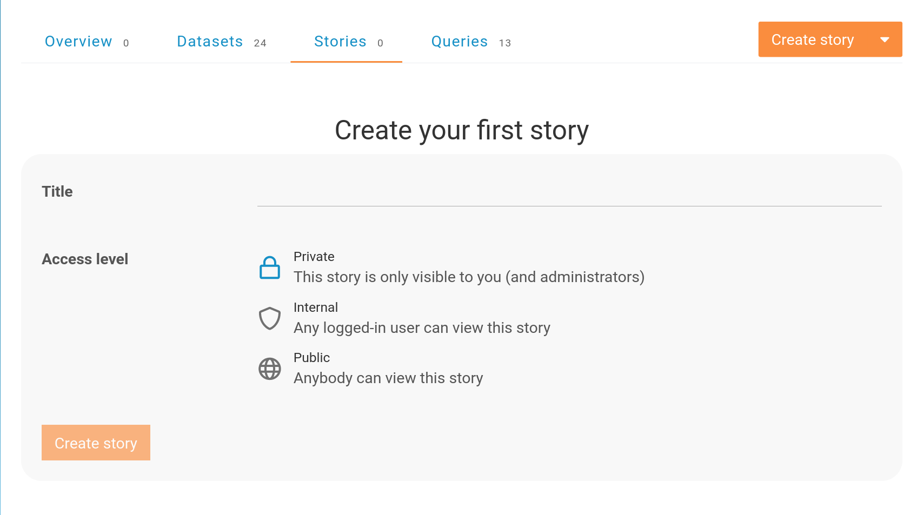
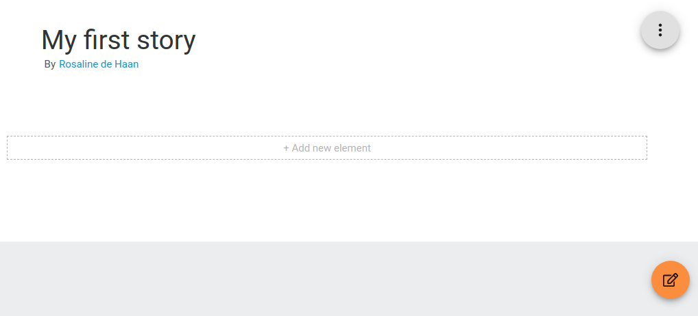
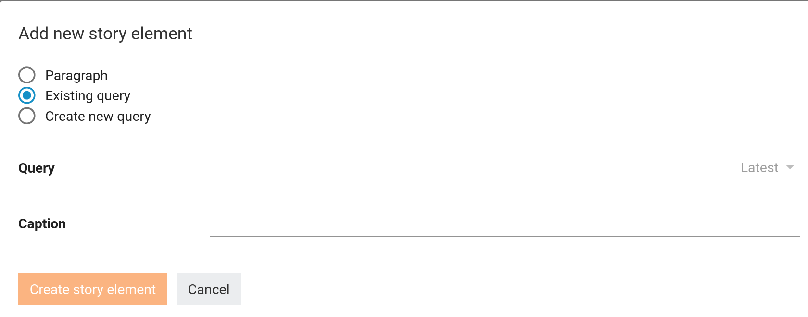
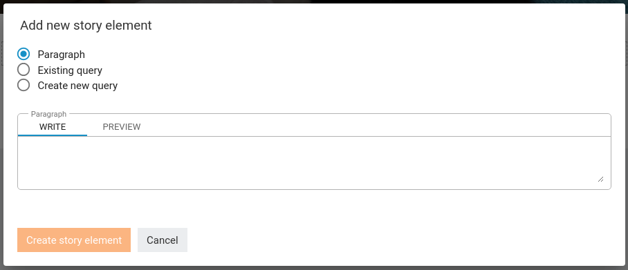
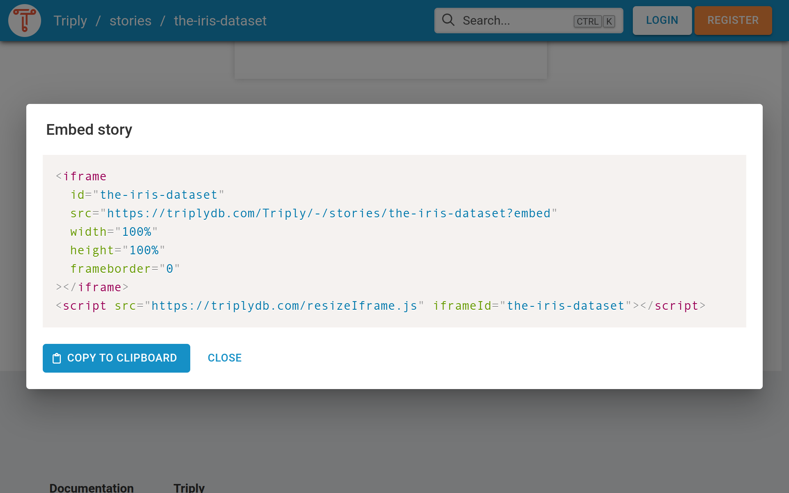

Data stories¶
A TriplyDB data story is a way of communicating information about your linked data along with explanatory text while also being able to integrate query results.
Creating a data story¶
You can create your own data story via the stories tab on TriplyDB. If this is your first time creating a data story, your view will look something like the image below. If you already are a proud owner of a data story, you will find it here. To create a new one, you can click the orange "Create story" button and you’ll see the same form.

In this form, you can fill in the title and set the access level for a data story. When everything is set, press the "Create story" button.This will take you to a new page where you can customize the data story.
Editing a data story¶
As shown in the image below, in the top right corner of the page, there is a menu button. Here you will find the following:
- Story settings: Here you can change the title and the access level of your story.
- Change banner: Here you can change the banner, just choose an image that you want as your banner (wide images work best).
- Copy: To copy the story to a different user or organization.
- Transfer: To transfer the story to a different user or organization.
- Embed: HTML to embed the story in a web page using an iFrame.
- Print: Dialog and print options to print the story.
- Delete: To delete the story.
In the right lower corner you see a button with a notepad. With this button, you can toggle between the edit view, which allows you to edit the story, and the reader view, which is how readers of your story will perceive this page.

Adding elements¶
To create your first element press "+ Add new element". This will open a new form as shown in the images below. Here you can select what kind of element you want to add to your data story; you’ll have the option to write text, to select an already existing SPARQL query, or even to create a new SPARQL query.
Existing query¶
Let’s start by selecting a query for our data story. Maybe you have already created one, but if you haven’t, you can select one of the queries available to you. You can search in the Query search bar and select the one you want, for example "our-first-select-query". Optionally you can select the version of the query and set the caption. When everything is set, press "Create story element". And look, we have added our first element to our story!

Paragraph¶
Data sometimes needs accompanying text to be completely understandable. TriplyDB not only supports writing plain text, but TriplyDB paragraphs are also markdown compliant. The markdown that you’ll add in the paragraph text box will be rendered as HTML and can be previewed. TriplyDB also supports images, and even code blocks with highlighting for the most common linked data and programming languages.

Sharing and embedding¶
Before you know it, you will have created your first data story. Congratulations! Now it is time to share it with the world, but don’t forget to set the access level to “public”. Then you have two options: 1. You can simply share the URL in TriplyDB. 2. You can embed the Data Story on your own webpage. Scroll all the way to the end of your Data Story and click the “ Embed” button. This brings up a code snippet that you can copy/paste into your own HTML web page.
